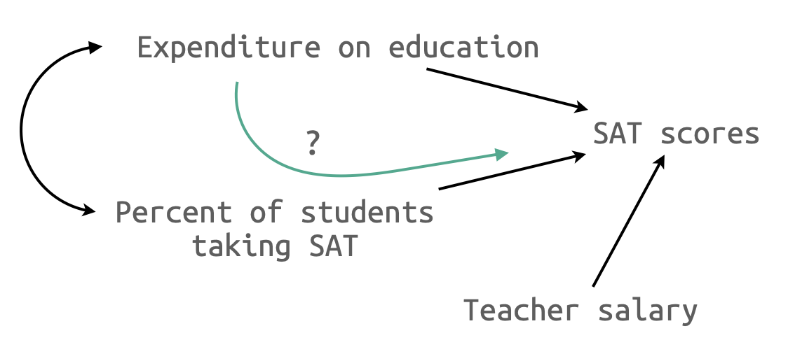

Guber (1999)의 SAT 점수와 주(states)의 교육지출 사이의 관계
Source: Statistical Methods for Psychology (8e) by Dave C. Howell
- 각 주에서 집행되는 교육지출이 미국 학생의 SAT 점수에 미치는 효과를 알아보고자 함.
- SAT를 치르는 학생들의 비율이 주마다 상이함.
- Data: ACT.csv
act <- read_csv("howell/ACT.csv")
act
# A tibble: 50 × 12
id State Expend PTratio Salary PctSAT Verbal Math SAT PctACT ACT
<dbl> <chr> <dbl> <dbl> <dbl> <dbl> <dbl> <dbl> <dbl> <dbl> <dbl>
1 1 Alabama 4.40 17.2 31.1 8 491 538 1029 61 20.2
2 2 Alaska 8.96 17.6 48.0 47 445 489 934 32 21
3 3 Arizona 4.78 19.3 32.2 27 448 496 944 27 21.1
4 4 Ark 4.46 17.1 28.9 6 482 523 1005 66 20.3
5 5 Calif 4.99 24 41.1 45 417 485 902 11 21
6 6 Col 5.44 18.4 34.6 29 462 518 980 62 21.5
7 7 Conn 8.82 14.4 50.0 81 431 477 908 3 21.7
8 8 Del 7.03 16.6 39.1 68 429 468 897 3 21
9 9 Florida 5.72 19.1 32.6 48 420 469 889 36 20.7
10 10 Georgia 5.19 16.3 32.3 65 406 448 854 16 20.2
# ℹ 40 more rows
# ℹ 1 more variable: LogPctSAT <dbl>
A. 변수들 간의 관계 탐색
lowerCor(act[c("SAT", "Expend", "LogPctSAT", "Salary")])
library(corrgram)
act[c("SAT", "Expend", "LogPctSAT", "Salary")] |>
corrgram(upper.panel = panel.cor, lower.panel = panel.pie)
SAT Expnd LPSAT Salry
SAT 1.00
Expend -0.38 1.00
LogPctSAT -0.93 0.56 1.00
Salary -0.44 0.87 0.61 1.00
GGally::ggpairs(act[c("SAT", "Expend", "LogPctSAT", "Salary")])
act |> ggplot(aes(x = PctSAT, y = SAT)) + geom_point() + geom_smooth()
act |> ggplot(aes(x = LogPctSAT, y = SAT)) + geom_point() + geom_smooth()
B1. 부분 회귀 계수들
mod1 <- lm(SAT ~ Expend, data = act)
mod2 <- lm(SAT ~ Expend + LogPctSAT, data = act)

export_summs(mod1, mod2, error_format = "({p.value})") |> print()
────────────────────────────────────────────────────
Model 1 Model 2
───────────────────────────────────
(Intercept) 1089.29 *** 1147.10 ***
(0.00) (0.00)
Expend -20.89 ** 11.13 **
(0.01) (0.00)
LogPctSAT -78.20 ***
(0.00)
───────────────────────────────────
N 50 50
R2 0.14 0.89
────────────────────────────────────────────────────
*** p < 0.001; ** p < 0.01; * p < 0.05.
Column names: names, Model 1, Model 2
# beta: standardized coefficients
lm.beta::lm.beta(mod2) |> print()
Call:
lm(formula = SAT ~ Expend + LogPctSAT, data = act)
Standardized Coefficients::
(Intercept) Expend LogPctSAT
NA 0.202704 -1.039937
B2. 부분 회귀 계수들
mod1 <- lm(SAT ~ LogPctSAT, data = act)
mod2 <- lm(SAT ~ LogPctSAT + Expend, data = act)
export_summs(mod1, mod2, error_format = "({p.value})") |> print()
────────────────────────────────────────────────────
Model 1 Model 2
───────────────────────────────────
(Intercept) 1185.83 *** 1147.10 ***
(0.00) (0.00)
LogPctSAT -69.65 *** -78.20 ***
(0.00) (0.00)
Expend 11.13 **
(0.00)
───────────────────────────────────
N 50 50
R2 0.86 0.89
────────────────────────────────────────────────────
*** p < 0.001; ** p < 0.01; * p < 0.05.
Column names: names, Model 1, Model 2
C. 부분 상관 계수들
lowerCor(act[c("SAT", "Expend", "LogPctSAT")])
SAT Expnd LPSAT
SAT 1.00
Expend -0.38 1.00
LogPctSAT -0.93 0.56 1.00
summ(mod2, part.corr = TRUE, model.info = FALSE, model.fit = FALSE) |> print()
Standard errors:OLS
------------------------------------------------------------------------
Est. S.E. t val. p partial.r part.r
----------------- --------- ------- -------- ------ ----------- --------
(Intercept) 1147.10 16.70 68.68 0.00
LogPctSAT -78.20 4.47 -17.49 0.00 -0.93 -0.86
Expend 11.13 3.26 3.41 0.00 0.45 0.17
------------------------------------------------------------------------
Summary
| Expend |
-0.38 |
0.20 |
0.45 |
0.17 |
| LogPctSAT |
-0.93 |
-1.04 |
-0.93 |
-0.86 |
| Expend |
0.14 |
0.04 |
0.20 |
0.03 |
| LogPctSAT |
0.86 |
1.08 |
0.86 |
0.74 |
D. 예측변수의 추가
예측변수가 3개인 경우
mod3 <- lm(SAT ~ Salary, data = act)
mod4 <- lm(SAT ~ Salary + Expend, data = act)
mod5 <- lm(SAT ~ Salary + Expend + LogPctSAT, data = act)
export_summs(mod0, mod2, mod3, mod4, mod5, model.names = c("mod0", "mod2", "mod3", "mod4", "mod5")) |> print()
───────────────────────────────────────────────────────────────────────────────
mod0 mod2 mod3 mod4 mod5
──────────────────────────────────────────────────────────────────
(Intercept 1089.29 1147.10 1158.86 1159.35 1133.11
) *** *** *** *** ***
(44.39) (16.70) (57.66) (60.22) (22.73)
Expend -20.89 ** 11.13 ** 0.47 7.10
(7.33) (3.26) (14.58) (5.50)
LogPctSAT -78.20 *** -79.51 ***
(4.47) (4.71)
Salary -5.54 ** -5.63 1.20
(1.63) (3.34) (1.32)
──────────────────────────────────────────────────────────────────
N 50 50 50 50 50
R2 0.14 0.89 0.19 0.19 0.89
───────────────────────────────────────────────────────────────────────────────
*** p < 0.001; ** p < 0.01; * p < 0.05.
Column names: names, mod0, mod2, mod3, mod4, mod5
# marginal vs. added-variable plots
mcPlots(mod4, overlaid = FALSE) # library(car)
# added-variable plots
avPlots(mod5) # library(car)
Q: Salary와 Expend 중 하나는 제거해야 되나???
- 상관관계가 높은 변수들은 서로 partial out되어 남은 잔차들의 변량이 줄어 Y와의 관계를 온전히 테스트하기 어려워짐
- 구체적으로는 standard error를 높여서 회귀계수에 대한 모집단에 대한 신뢰도를 낮춤
- 이를 다중공선성(multicollinearity)이라고 함
- variance inflation factor (VIF)로 측정함
- 표준오차를 \(sqrt(vif)\)배 만큼 증가시킨다고 해석
- 이들을 하나의 “묶음”(set)으로 취급해도 무방함
Salary Expend LogPctSAT
4.531896 4.128730 1.609542